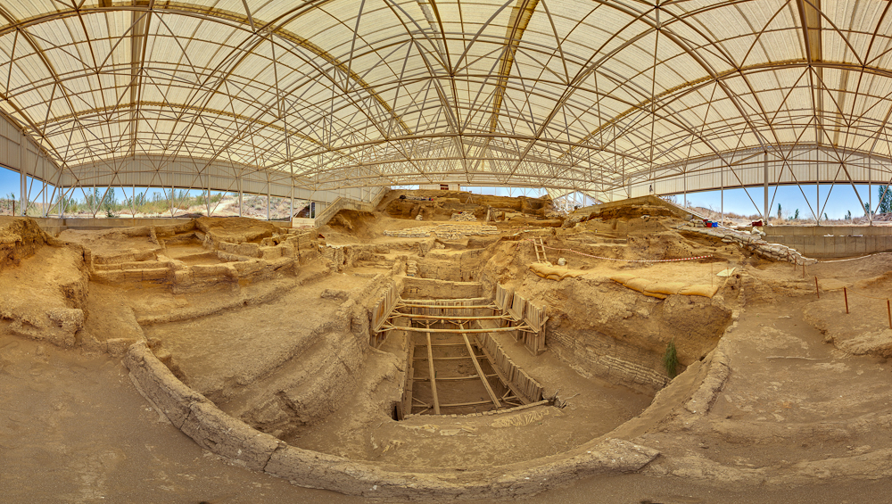
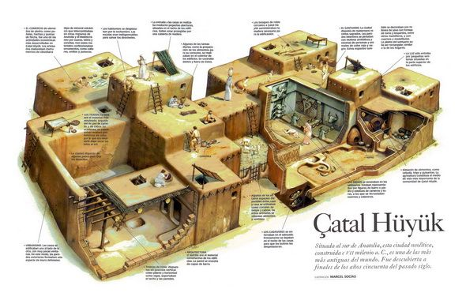
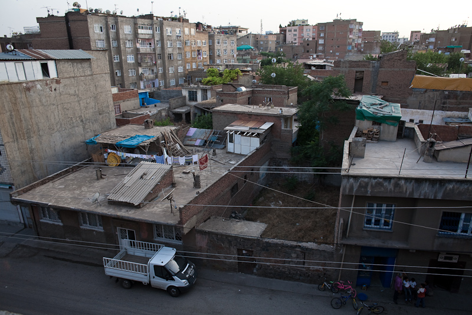
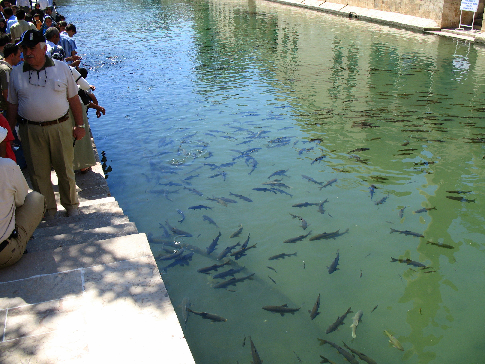
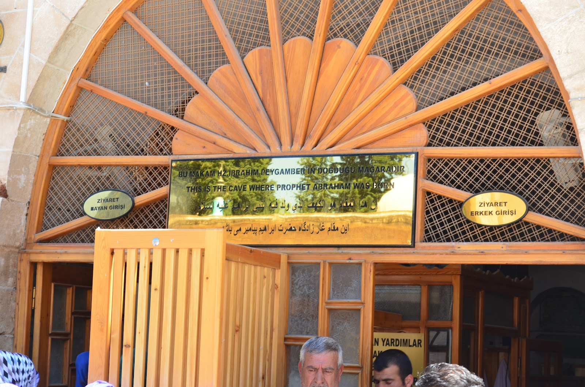
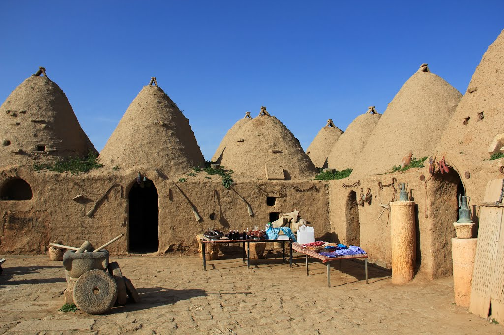
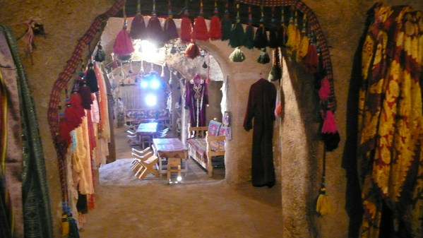

土耳其 旅遊景點簡介
此網頁介紹四個土耳其的城市：Ankara、Konya、Diyarbakır、Şanlıurfa，以及這四個城市附近的景點。
Ankara
Ankara是土耳其的首都，是僅次於Istanbul的第二大城。
Museum of Anatolian Civilisation
由過去的有頂市集改建，藏品包含舊石器時代、新石器時代、青銅器時代和西臺帝國、腓尼基王國等等。
Anıtkabir
土耳其國父凱末爾的陵墓，凱末爾對土耳其有無數貢獻，備受土耳其人尊崇。他終結鄂圖曼土耳其王國的腐敗統治，將土耳其帶向現代化，他也是土耳其第一個民選總統。凱末爾當時進行了兩項西化改革，一是使土耳其政教分離，二是改用拉丁字母拼寫土耳其文。陵墓內還有博物館，展出許多凱末爾生前的遺物，例如他的座車、文件和照片等等。


▲ Museum of Anatolian Civilisation ▲ Anıtkabir
Konya
位於土耳其中部的古老城市，也是土耳其宗教最保守的都市，其居民為相當虔誠的穆斯林。Konya過去為塞爾柱土耳其的首都，因此留下了很多賽爾柱土耳其式的建築，包含清真寺和神學院。當地飲食主要為小麥和羔羊肉，Etli ekmek是源自於Konya的食物，其常見於土耳其中部各城市。
Ince Minare Medrese
Konya最著名的塞爾柱土耳其式建築，雖然當初建造時是作為穆斯林的神學院，現在已被翻修成為展示木造工藝品和石頭雕刻的博物館。


▲ Ince Minare Medrese ▲ Ince Minare Medrese
Çatalhöyük
Çatalhöyük是個新石器時代遺址，距今9500年左右。此遺址出土大量的家屋結構、室內葬及各種藝術成就，包含精美的壁畫和小型雕像等。考古學家發現當時人們種植作物和馴養動物，但他們的食物大多來自野生動植物，Çatalhöyük在其人口巔峰時估計擁有高達8000人。


▲ Çatalhöyük ▲ Çatalhöyük
Diyarbakır
位於底格里斯河畔的古老城市，是土耳其東南的庫德人聚集中心。著名黑色的玄武岩石牆是羅馬時期留下來的，城市內還有阿拉伯式清真寺、加色丁禮天主教會、古老的歷史建築，另外，底格里斯河畔的草木花卉也值得一看。和其他城市相比，Diyarbakır的市容較為骯髒、雜亂。原因是Diyarbakır居民傾向支持庫德人政黨，土耳其政府認為Diyarbakır居民也支持庫德人武裝組織，因此對於Diyarbakır的基礎建設和種種需求，政府態度總是被動消極，給予稀少經費。另外，1980年代以來土耳其政府鎮壓庫德人武裝組織，迫使許多東部山區的居民離開原鄉，流落到Diyarbakır。這些難民到了Diyarbakır後，在古城牆外圍搭起鐵皮屋和違章建築，最後形成一整片的貧民窟。然而，在Diyarbakır，我們可以置身這些庫德人的生活環境，了解庫德人在Diyarbakır的處境，觀看庫德人如何面對這種種問題，並從中思考土耳其社會的族群關係。Diyarbakır聞名於以黑胡椒、鹽膚木、香菜調味的羔羊肉料理，他們的米飯、小麥和奶油的料理也相當著名。然而，Diyarbakır最著名的料理是Meftune，它是以羔羊肉和蔬菜佐大蒜、鹽膚木製成。另一項著名的料理是Kaburga Dolması，是填入米飯和多種香料的烤羊肋。Diyarbakır的西瓜也聞名和出口國際，城市還每年舉辦盛大的西瓜節。


▲ 黑色玄武岩石牆 ▲ Diyarbakır 城市一隅
Şanlıurfa
位於土耳其東南方的城市，其也被稱為Urfa，主要的人口為庫德人和阿拉伯人。當地相傳先知亞伯拉罕被寧錄施以火刑，在亞伯拉罕被丟進火堆那一刻，火焰變成了水，燃燒的柴變成了魚，從此這個水池和池中的魚被認為是神聖的。這個魚池被稱為Balıklıgöl，是當地的熱門景點。在Balıklıgöl一旁有個洞穴，當地相傳先知亞伯拉罕出生於此。洞穴分為男女敬拜區，有許多虔誠的穆斯林前來敬拜。另外，Balıklıgöl附近有販賣當地工藝品的市集。Şanlıurfa過去是東西往來的交通要道，所以當地的料理融合了多種文化。此處被認為是許多料理的起源地，例如當地的著名小吃Raw Kibbé，其為小麥、洋蔥、番茄、辣椒醬等食材加上牛肉揉成的生肉球，相傳是先知亞伯拉罕發明的。另外一項著名的料理是串燒，當地喜歡烤羔羊肉、動物內臟等。


▲ Balıklıgöl ▲ 亞伯拉罕洞穴
Harran
其最負盛名的就是蜂巢泥屋，為因應當地氣候和環境蓋出的特殊建築。Harran乾燥、冬季寒冷、夏季炎熱，在缺乏樹木的情況下沒有木頭可當建材，因此當地利用黃土、動物糞便和麥稈混合做成泥磚，以泥磚建造住屋，而且泥屋住起來冬暖夏涼。今日的Harran看似荒涼，但這古都其實曾是繁華的城市，儘管已成斷垣殘壁，但這裡曾有第一所伊斯蘭大學和小亞細亞第一間清真寺。Harran之所以成為今日的模樣是因為蒙古人西征，將一切毀壞殆盡，從此Harran一蹶不振。另外，聖經創世紀記載先知亞伯拉罕曾居於此。


▲ 蜂巢泥屋 ▲ 蜂巢泥屋內部